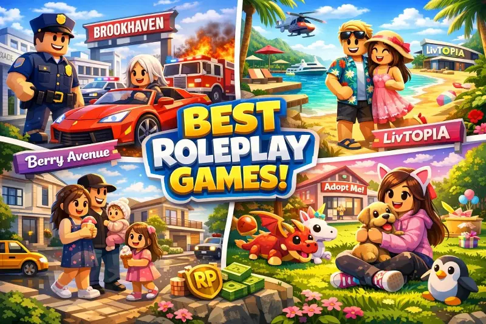
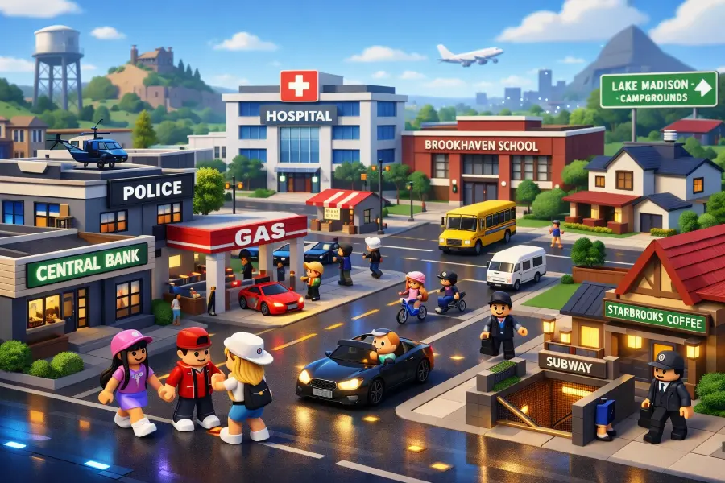

Los mejores juegos de Roleplay en Roblox 2026: guía completa y economía interna

El género de roleplay siempre ha sido el corazón de Roblox. En 2026 esta categoría no solo sigue siendo la más popular, sino que ha evolucionado hasta tener economías internas complejas, sistemas de trabajo, propiedades digitales y comunidades activas. Si quieres saber cuál jugar y cómo sacarle el máximo partido, esta es tu guía.
¿Qué define a un buen juego de roleplay en Roblox?
Los mejores juegos del género comparten tres características fundamentales: libertad de elección real (puedes ser médico, mecánico, policía o simplemente un vecino tranquilo), una economía interna coherente donde el esfuerzo se traduce en recursos, y una comunidad activa porque el roleplay es, por definición, un deporte de equipo.
Antes de entrar a los títulos concretos, vale la pena entender esta distinción: no todos los juegos que se llaman "RP" en Roblox son genuinamente de roleplay. Muchos son solo mundos decorativos donde los jugadores deambulan sin interacción real. Los títulos que analizamos aquí tienen mecánicas que fomentan la interacción, la narrativa y el progreso.
Los juegos de roleplay más populares de 2026
Brookhaven RP
Sigue siendo el rey indiscutible con picos regulares de más de 700 000 jugadores simultáneos. Su fortaleza está en la apertura total: no hay misiones ni objetivos forzados, solo una ciudad viva donde tú decides qué historia vivir. Puedes alquilar una casa, conducir por la ciudad o construir narrativas completamente originales con desconocidos.
Economía de Brookhaven
Brookhaven no tiene moneda interna propia. La mayoría de opciones decorativas se desbloquean con Robux, pero el juego incluye un sistema rotativo de casas gratuitas que permite disfrutar la experiencia sin invertir. Los creadores han equilibrado bien la monetización: suficiente contenido gratuito para atraer jugadores, y personalización premium para quienes quieran más. Para nuevos jugadores, la recomendación es explorar todo el contenido gratuito antes de gastar.

Vista aérea de Brookhaven RP — el juego de roleplay más jugado de Roblox en 2026.
Welcome to Bloxburg
Bloxburg requiere un pago único de 25 Robux, lo que ha creado una comunidad notablemente más madura y comprometida. El juego simula la vida con profundidad sorprendente: trabajas en empleos reales, ganas "Bucks" (su moneda interna) y construyes tu hogar desde los cimientos. La curva de progresión es lenta pero satisfactoria.
Economía de Bloxburg: la más completa del género
Bloxburg tiene la economía interna más sofisticada de cualquier juego de roleplay en Roblox. Ofrece siete trabajos, cada uno con salario base y un sistema de estados de ánimo que afecta la productividad. Las opciones más populares son:
- Pizza Planet: el más accesible para principiantes, con reparto en bicicleta o coche por la ciudad.
- Mecánico: mejor remunerado, requiere seguir instrucciones en pantalla para reparar vehículos.
- Médico / Enfermero: el de mayor pago a largo plazo, con turnos más exigentes y atención a pacientes.
- Vendedor de Helados: poco lucrativo económicamente pero perfecto para el roleplay social.
Berry Avenue RP
La revelación del roleplay hispanohablante en Roblox. Berry Avenue combina accesibilidad, cuidado estético en el diseño de interiores y una comunidad en español muy activa. Sus creadores han demostrado ser receptivos al feedback de la comunidad, actualizando el juego con contenido pedido directamente por los jugadores, lo que genera una sensación de pertenencia que otros títulos no logran.
Por qué Berry Avenue domina entre jugadores hispanohablantes
En países de habla hispana, Berry Avenue se ha convertido en el punto de encuentro del roleplay. Su interfaz intuitiva, su comunidad activa en español y la posibilidad de personalizar el hogar sin necesitar Robux lo hacen especialmente atractivo. La economía funciona con monedas internas que se obtienen completando actividades sociales: asistir a eventos, visitar tiendas y participar en la vida del barrio digital.
Otros títulos que merecen tu atención
- Livetopia: similar a Brookhaven con misiones opcionales que añaden estructura sin quitar libertad al jugador.
- Adopt Me!: fuertes elementos de roleplay familiar con la economía de intercambio de mascotas más compleja de toda la plataforma.
- MeepCity: pionero del género, excelente punto de entrada para principiantes que nunca han jugado roleplay.
Consejos generales para dominar el roleplay en Roblox
- Aprende la etiqueta del servidor. Observa antes de actuar, especialmente en servidores con roleplay estricto donde hay reglas no escritas que los veteranos respetan.
- No gastes Robux en las primeras horas. Explora completamente el contenido gratuito antes de cualquier inversión. Muchos elementos premium no son necesarios para disfrutar el juego.
- Encuentra servidores en tu idioma. La experiencia mejora enormemente cuando puedes comunicarte con fluidez. Usa los filtros de servidor si el juego los ofrece.
- Participa en eventos especiales. Los juegos de roleplay ofrecen artículos exclusivos en festividades. Estos ítems suelen ser los más valiosos a largo plazo.
- Respeta a los demás jugadores. El roleplay es colaborativo. Un buen compañero enriquece la experiencia de toda la comunidad del servidor.
El futuro del roleplay en Roblox
Con las nuevas herramientas de Roblox Studio que incorporan asistencia de inteligencia artificial, los mundos de roleplay están a punto de volverse mucho más ricos. Los creadores ya experimentan con NPCs que responden dinámicamente a las preguntas de los jugadores, economías que se ajustan al comportamiento colectivo, y narrativas que evolucionan sin intervención manual del desarrollador.
El género que nació de la imaginación de millones de jugadores está madurando hacia algo que los videojuegos tradicionales todavía no han logrado replicar: una experiencia social genuinamente abierta donde cada jugador es también narrador. Si no has explorado el roleplay en Roblox recientemente, 2026 es el mejor momento para hacerlo.